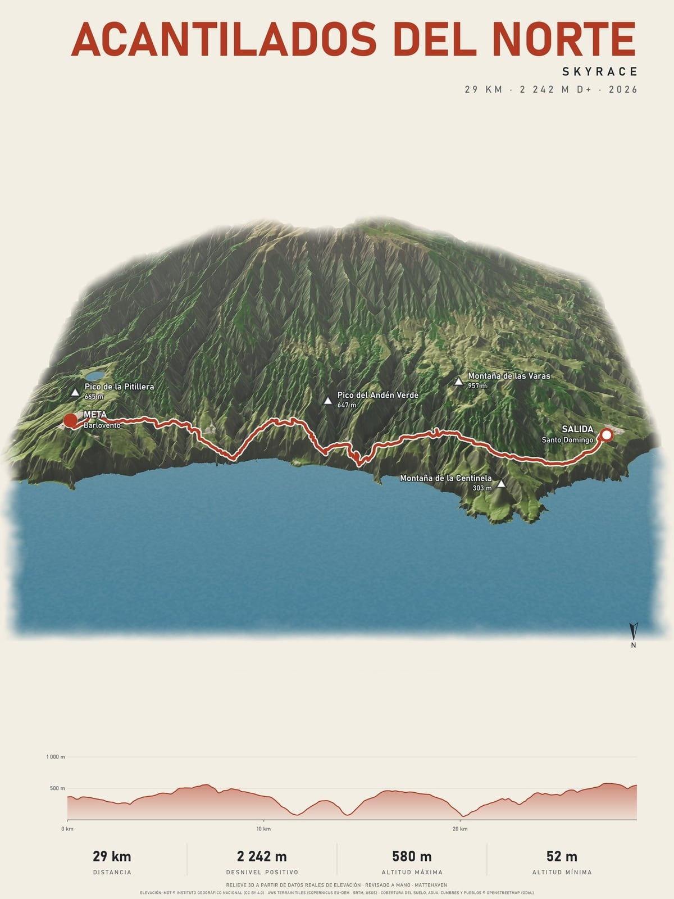
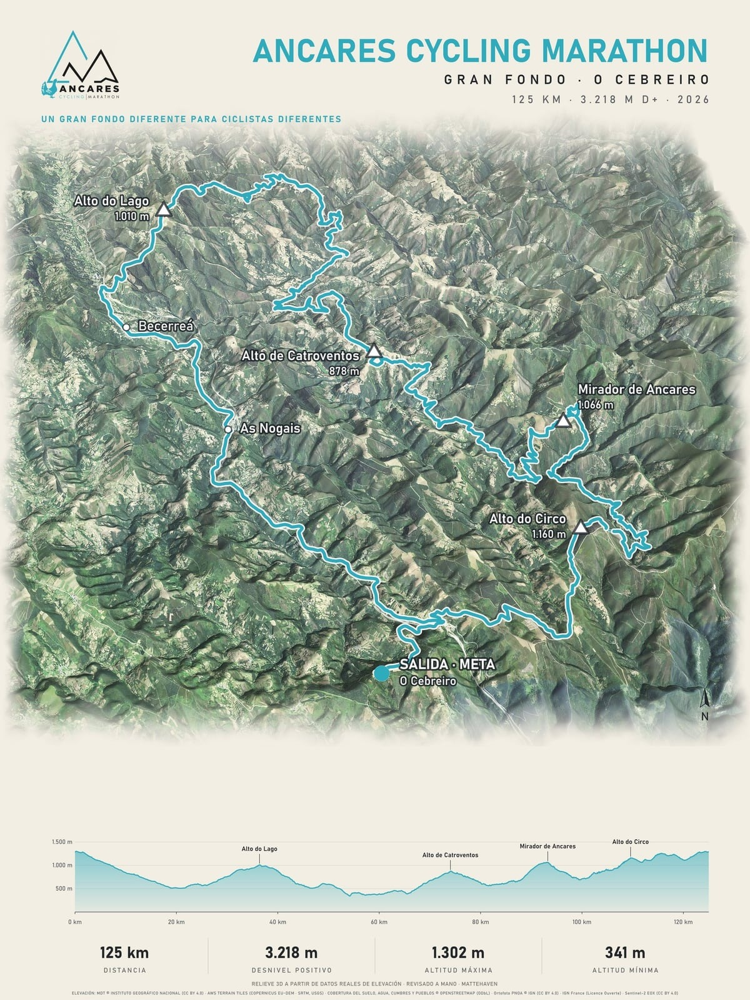

Official finisher prints
Your race map in 3D, on the real relief. With your name and your time.
Each course is drawn in 3D over the real mountains it crosses, from real elevation data and aerial imagery, and checked by hand against the official track and results. Then it is printed and shipped to your door.
Official prints of these races
Each one is the race's own print, made with the organisers. Type your name and time on its page and see your print before you order.







How it works
Three steps from the finish line to your wall.
Type your name and time
Pick your distance and see the print exactly as it will look before you order.
We check it by hand
Every print is reviewed against the official course and results before it goes to print.
Printed close to you
Premium matte paper, printed by our production partner near you and delivered to your door. Etsy shows the estimated date at checkout.
€3930 × 40 cm print
€6930 × 40 cm, framed and ready to hang
Freedelivery included
A gift for a runner or a cyclist
A finish line deserves more than a medal in a drawer. This is the race they trained for, on their wall, with their name on it.
- Don't know their time? Type only their name: we look it up in the official results.
- We send you a proof before printing, and if anything is wrong we reprint it at no cost.
- In a hurry? The digital file arrives within 24 hours, with a card to give it.
- Framed or unframed (the race prints also on canvas or metal), with delivery included.
Hiking routes, cycling climbs and ski maps
Not a race? The same 3D print for the great walks, the famous climbs and the ski areas, with your name and your dates or your time.
For race organisers
An official finisher print for your race, at no cost to your club or association. You only send one email to your finishers with the link.
- We draw your course in 3D within 48 hours, with your logo and your colours, no commitment.
- Each runner gets a page to see their own print with their name and time before ordering.
- We print, frame, ship and answer every customer. You never handle orders or runner data.
- Your club earns €8 for every framed print and €4 for every print, paid monthly with a full order list.
- A 13-second 3D video of your course for your social media, as a gift.